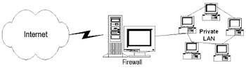

|
| ||
|
| ||
Tom Moran
Microsoft Corporation
July 27, 1998
The following article was originally published in the Site Builder Network Magazine "Servin' It Up" column (now MSDN Online Voices "Servin' It Up" column).
So I guess that fat, bald guy in the picture is supposed to be me. I swear that's not the picture they showed me.
Enough frivolity. I want to talk about a very serious subject, and my hair doesn't quite qualify. After my first column on security, I received several questions asking about firewalls. It's surprising how many people still think of firewalls -- if they think of them at all -- simply as routers. In an ideal world, most people wouldn't have to think of them, because to most people they would be totally transparent.
You might have guessed that the term firewall didn't originate with network security, but, like many other terms in our industry, was borrowed from another industry -- in this case, firefighting. Years ago during disaster-skills and firefighting training, the first thing we were taught is that you remove part of the fire triangle (fuel, oxygen, heat), and fire dies. This is how a firewall works, and has been working all over Florida this past month. Remove or clear an area of fuel, and, when the fire gets there, it can't go anywhere else. Of course, the firefighters can still get through because their protocol -- in their case, the ground to walk on -- is still available. The firewall on your network works in much the same way. You want the good guys to get through and have what they need, but you want to prevent the evildoers from getting through.
Firewalls today are very complex, and provide many features besides the traditional packet-filtering function. They provide multiple layers of protection, from looking at IP addresses to examining the actual content being passed to you. They have sophisticated ways to identify potential intrusions, to log those activities, and to proactively notify the right people. Some have features, such as content-caching, to improve performance, support for Virtual Private Networks (VPNs), Web-based administration, authentication, and so on.
In a nutshell, a firewall is what stands between you and the outside world.

Of course, the picture above is very simplistic. In actuality, a firewall consists of a variety of things, including host (called a bastion host), routers, and services. Depending on your situation, you may have multiple firewalls, multiple internal networks, VPNs, extranets and perimeter networks. You also may have a variety of connection types, such as TCP and UDP, audio or video streaming, and downloading of applets. You also might have additional routers, hosts, and other machines that make up your firewall. There are many ways to set up a firewall, and the above picture definitely does not represent the most secure.
There are three basic approaches or services that a firewall uses to protect your network. The first is known as packet filtering. In their first incarnation, firewalls really were just nothing more than specialized routers. The firewall performed a very basic function, to examine each network packet as it came down the wire to ensure that the address was appropriate. This is still an integral part of a firewall strategy. It has the benefit that it is very efficient and speedy, since it is just looking at a header and making no changes, simply allowing or denying entry. It does this by looking at the header and verifying the IP address, the port, or both. For example, if it finds an IP address in a header that should be an internal IP address, but it is coming across the public Internet, that is a danger sign. Packet filtering can be either inbound or outbound. An additional benefit of packet filtering is that it generally requires no knowledge or cooperation from the user.
The second approach is through the use of what is called a circuit proxy. The difference between this and the packet filter is that the circuit proxy forces all communicators (client or server) to address their packets to the circuit proxy, not directly to the intended target. So the proxy gets a packet addressed to it, and then changes the address to represent the internal target. As you can imagine, performance is not quite as good as plain packet filtering, although it's not much of a difference, since you are simply replacing header information. The main advantage is that it hides the real IP address, which, to someone trying to gain access to your system, is one of the most important information tidbits. Look for support of both SOCKS and WinSock proxy.
The third approach uses what is known as an application proxy. The application proxy understands the application protocol and data, and intercepts any information intended for that application. A mail server is a good example of this. The application proxy can do such things as authenticate users, instead of simply relying on IP addresses, and even determine if the actual data represents something that could be harmful. Of course, this is much more intensive than packet filtering; often users or clients must be reconfigured to use them, so you lose some of the transparency we talked about earlier.
Caching, while not traditionally part of a firewall, is becoming an increasingly important feature for a firewall solution. The idea: Since all traffic comes through the firewall, that is the ideal place to check for frequently accessed content. So, for example, the second time a popular Web page is accessed by anyone in your company, it is already there, resulting in a huge performance increase.
Testing your firewall is tough. You need to understand security concepts, have an in-depth understanding of TCP/IP, and be familiar with various methods of attack, such is IP spoofing, denial of service, information theft, and the list goes on. It is critical to test a firewall because even a minor mistake in configuration can lead to holes in your network. One of the most infamous tools for testing networks is SATAN. It is designed to expose problems in your security, and let you know what they are. In the MSDN Online Bookstore, I found the following book, which explains how to use this tool:
Protecting Networks With SATAN  by Martin Freiss (O'Reilly & Associates).
by Martin Freiss (O'Reilly & Associates).
An important feature of a firewall solution is to be able to log events, determine whether certain usage is appropriate, and notify someone in authority. It does little good if your network is hacked and you don't find out for several weeks. It is also important that your logs be both very secure and very accessible, which might seem a little like opposing forces. You certainly don't want logs to accessible, since they are a favorite target of hackers trying to cover up their activities. On the other hand, you want the right people to be able to view them easily. The other thing to consider is the security. Is the log on a PC in a locked room? Is it being written to a non-modifiable device? Can the system generate an alert and page you in real time if the network is under attack? These are the types of questions you have to ask yourself.
Obviously, management and operational overhead are issues. Management ranges from command line to HTML-based remote access. Keep in mind that if you are going to use remote access to administer your firewall, you had better not have a user account of admin with a blank password. Make sure the remote-access method is secure.
This has pretty much been the hot topic lately. Basically, you want to use the public Internet to access your secure network, or connect two private networks. This is obviously a heck of a lot cheaper than using a WAN. Of course, there are serious security implications. Which is why VPNs were created. A typical scenario might be: User dials up his or her ISP from a laptop. The information is encrypted, sent over the public network to a known PPTP server, then decrypted, allowed through the firewall, and access is granted. You might also use a VPN when connecting a remote office to a main campus, each with its own private network. I'm not going to talk much more about this, since the topic has been covered some in the press lately.
Of course, I have to say something about the Microsoft solution. It has all of the features I've listed and many more. It obviously integrates well with Windows NT and is very affordable. What I appreciate most, since I surf the Web a lot, is the content caching, which can really make a difference. If you already have a basic firewall, Proxy Server is designed to work with it. If you don't have one, Proxy Server can fill that need. The current version is 2.0, and information including reviewer's guide, trial downloads, white papers, can be found on the Microsoft Proxy Server site  .
.
Thankfully, I am not a lawyer. And I don't play one on TV. So what I tell you here should be ignored, and you should get the advice of a legal professional. By not having a firewall presence, and possibly by not doing it very well, you can expose yourself to liability and claims from a variety of sources. For example, say you have not acted with due diligence by protecting your network properly with a firewall. Competitor steals information, builds a great product before you do, and your stock goes down. Stockholders sue you and all sorts of nastiness ensue. You may also have privacy issues, since you are logging what your employees are doing. There are many other potential scenarios, as well as specific requirements concerning admissibility as evidence of computer logs. Again, get a good consultant and make sure you are aware of the issues before something happens. Did I mention I'm not a lawyer?
Keep in mind that most security breaches are not from some great genius trying to get into your network, but rather from some great idiot trying to get out. Imagine a hypothetical coworker, we'll call him Rafael, who sits down the hall and has a phone line. Rafael decides to buy a $30 modem and connect that to the phone line and then dial up his ISP. Not a good idea -- there is now an unauthorized hole into your network. Or, take this hypothetical Rafael again, and imagine that he has to log-in multiple times with unique strong passwords, which are difficult to remember. So he keeps them in his wallet, which gets stolen and has his building access card with his name on it. Hacker finds the wallet, and you've got problems. A firewall solution must work within your existing security policies, and you must balance security concerns with realism. The best firewall in the world won't help you if all your doors are unlocked.
Thanks for reading.
Tom Moran is a program manager with Microsoft Developer Support and spends a lot of time hanging out with the MSDN Online Web Workshop folks. Outside of work, he practices kenpo (although sometimes necessary at work), tries out original recipes on his family (Lisa, Aidan, and Sydney), leads white-water trips, or studies tax law (boring, but true).
Did you find this material useful? Gripes? Compliments? Suggestions for other articles? Write us!
© 1999 Microsoft Corporation. All rights reserved. Terms of use.